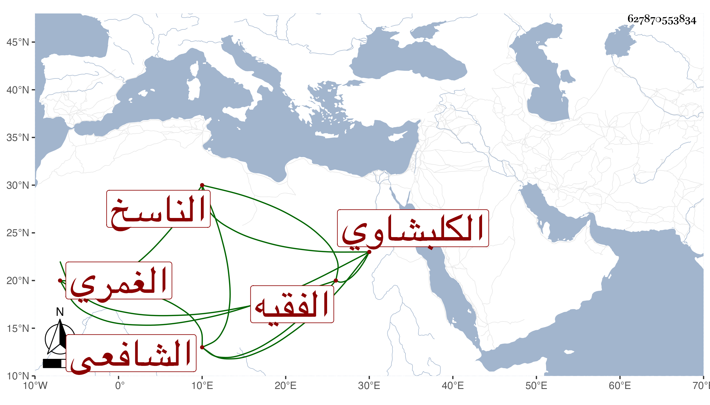

0902Sakhawi.DawLamic.ITO20230111-ara1.EIS1600.627870553834
Biography ID: 627870553834
567
حسين بن علي بن حسين البدر الكلبشاوي الغمري الفقيه الناسخ الشافعي . كان صالحا خيرا سليم الفطرة اشتغل بالفقه والعربية والفرائض يسيرا ولم ينجب ، وسمع على شيخنا وغيره ، وكتب بالأجرة الكثير بخطه الصحيح ومن ذلك عدة نسخ من تصنيفي القول البديع وسمعه منى مع غيره وأذن بالباسطية وغيرها وأدب الأولاد وقتا ، وحج مرارا آخرها في موسم سنة ست وستين وثمانمائة بعد أن فجع بموت ولدين له في الطاعون الماضي قريبا فحج ورجع للزيارة النبوية ماشيا ، وكانت منيته بين الحرمين فيها قبل الوصول عن بضع وخمسين ظنا ونعم الرجل كان رحمه الله .
